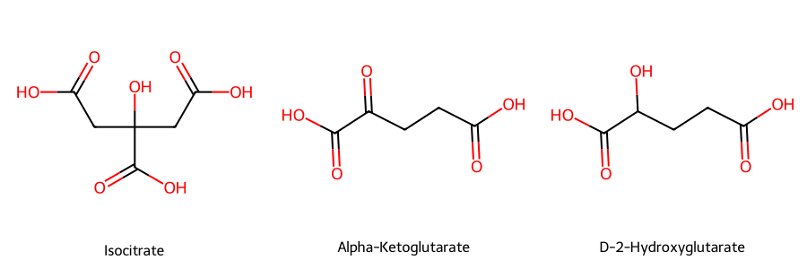
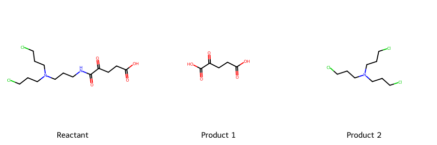
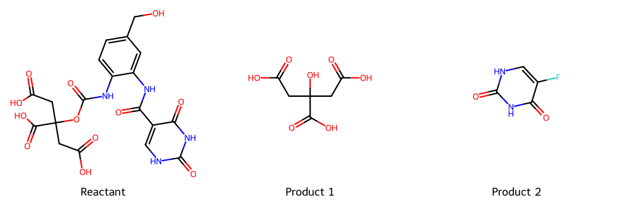
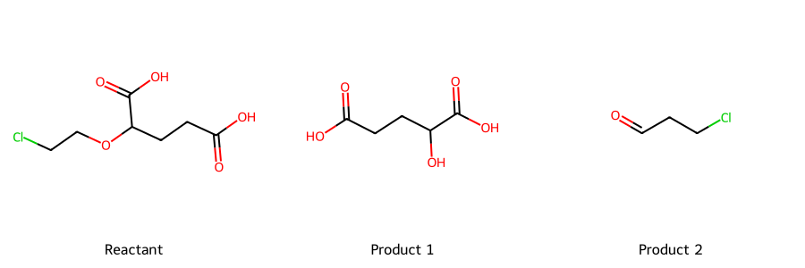
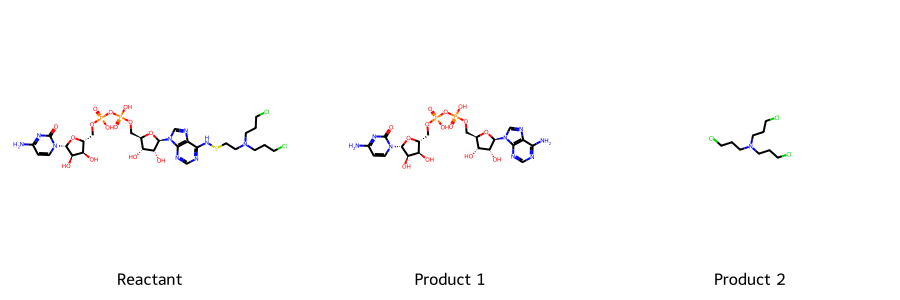

Mutant IDH-Activated Cytotoxic Prodrugs for Glioma Therapy
Abstract
IDH1-mutant gliomas produce the oncometabolite D-2HG, driving tumor progression through metabolic and epigenetic disruption. While IDH inhibitors like vorasidenib slow tumor growth, they do not eradicate cancer cells. This article explores a novel strategy: cytotoxic prodrugs selectively activated by mutant IDH1, offering a targeted approach to directly kill tumor cells while minimizing harm to normal tissue. By leveraging the unique biochemistry of IDH1-mutant tumors, these prodrugs could provide a more effective treatment option beyond current IDH inhibitors.
Introduction and Background
Gliomas and IDH1 Mutations
Gliomas are a diverse group of primary brain tumors that arise from glial cells. They account for approximately 30% of all brain and central nervous system tumors and 80% of malignant brain tumors. Among gliomas, mutations in the isocitrate dehydrogenase 1 (IDH1) gene are frequently observed, particularly in lower-grade gliomas. The most common mutation is an arginine-to-histidine substitution at position 132 (R132H), which confers a gain-of-function phenotype.
Role of IDH1 (R132H) in Oncogenesis
Wild-type IDH1 normally catalyzes the oxidative decarboxylation of isocitrate to alpha-ketoglutarate (α-KG), producing NADPH. However, the R132H mutant IDH1 converts α-KG to D-2-hydroxyglutarate (D-2HG). Elevated levels of D-2HG drive oncogenic transformation, in part by disrupting cellular differentiation and epigenetic regulation.
Figure 1. Chemical structures of isocitrate, alpha-ketoglutarate, and D-2-hydroxyglutarate (D-2HG).

Exploiting Mutant IDH1 for Prodrug Therapy
A prodrug is an inactive or less active form of a drug that is metabolized in the body to release the active molecule. Prodrugs can improve selectivity, reduce toxicity, or enhance pharmacokinetic profiles. In the context of the IDH1 (R132H) mutation, the enzyme’s altered substrate specificity offers a unique opportunity to design a prodrug that is preferentially activated in tumor cells, thereby minimizing damage to normal tissues.
Selective Inhibitors of Mutant IDH
Vorasidenib (AG-881) is a dual inhibitor of mutant IDH1 and IDH2 that has shown promise in clinical trials for IDH-mutant gliomas. As an allosteric inhibitor, vorasidenib binds to and stabilizes the inactive conformation of the mutant enzyme, reducing the production of D-2HG. Key features include:
- Blood–brain barrier penetration: Vorasidenib can effectively cross the blood–brain barrier, an essential requirement for treating central nervous system tumors.
- Reduced D-2HG levels: By lowering D-2HG, vorasidenib can halt or slow the epigenetic and metabolic disruption driving gliomagenesis.
- Clinical trials: In the phase 3 INDIGO trial, vorasidenib significantly improved progression-free survival in patients with grade 2 IDH-mutant glioma. The median progression-free survival was 27.7 months for the vorasidenib group compared to 11.1 months for the placebo group (PubMed).
While IDH inhibitors such as vorasidenib can stabilize or slow tumor progression, they often do not induce robust tumor cell death.
Rationale for a Cytotoxic Prodrug Approach
- IDH Inhibitors (e.g., Vorasidenib): Reduce D-2HG production, promote cellular differentiation, and slow tumor growth.
- Mutant IDH-Activated Cytotoxic Prodrugs: Directly kill tumor cells by releasing a toxic agent inside cells that harbor the mutation. This approach could reduce tumor mass rather than merely limiting its growth.
Proposed Mechanism of Action
-
Design of the Prodrug A substrate analog of α-KG, isocitrate, D-2HG, or NADPH is engineered to carry a cytotoxic moiety. This prodrug remains inert in normal cells lacking the mutant IDH enzyme.
-
Selective Activation in Mutant IDH1 (R132H) Cells The mutant IDH1 (R132H) enzyme recognizes and converts this modified analog in a way that triggers the release of the cytotoxic payload.
-
Tumor Cell Killing Once activated, the agent induces cell death in IDH-mutant cells. Normal cells do not perform this enzymatic conversion and are spared from toxic effects.
-
Reduced Off-Target Toxicity By confining drug activation to cells harboring IDH1 (R132H), systemic toxicity can be minimized, potentially improving the therapeutic index compared to non-targeted chemotherapies.
Proposed Prodrug Designs
Some of these structures are wrong and the reactions are not balanced. But the sketches convey the principle.
α-KG Derivative Prodrug
Mechanism Sketch: Mutant IDH-mediated activation releases a nitrogen mustard warhead.

Isocitrate-Like Self-Immolative Prodrug
Mechanism Sketch: Self-immolative release of 5-FU after mutant IDH processing.

2-HG Mimic Prodrug
Mechanism Sketch: Mutant IDH catalysis releases a reactive aldehyde.

NADPH-Linked Prodrug
Mechanism Sketch: Redox-mediated release of an alkylating agent.

Enjoy Reading This Article?
Here are some more articles you might like to read next: